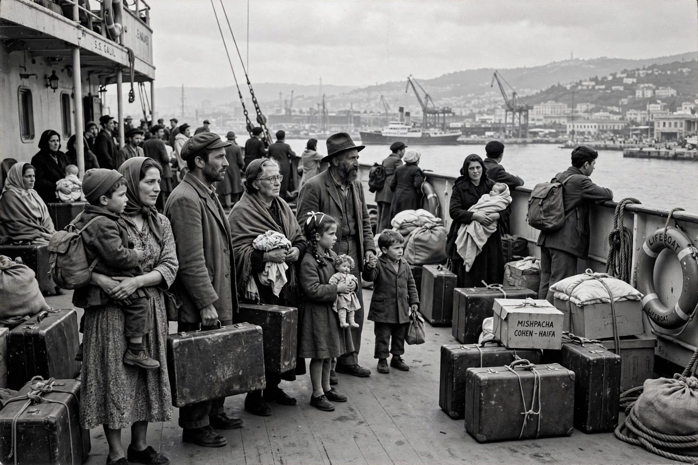

Aliyah (Hebrew: עֲלִיָּה, "ascent") is the immigration of Jews from the diaspora to the Land of Israel. A central tenet of Zionism, it is facilitated by Israel's Law of Return (1950), which grants Jews, their children and grandchildren the right to Israeli citizenship.

Modern aliyah is conventionally divided into waves: the First Aliyah (1882–1903) from Eastern Europe and Yemen; the Second (1904–1914), which founded the kibbutz movement and Tel Aviv; the Third (1919–1923) and Fourth (1924–1929); and the Fifth (1929–1939), largely German Jews fleeing Nazism. During the Holocaust and after, clandestine immigration (Aliyah Bet) defied British restrictions.
Mass immigration doubled Israel's Jewish population within a few years of 1948, including airlifts of Yemenite Jews (Operation Magic Carpet) and Iraqi Jews (Operation Ezra and Nehemiah), and later Ethiopian Jews (Operations Moses and Solomon). About one million Jews arrived from the former Soviet Union after 1989.
Emigration from Israel is called yerida ("descent"). New immigrants (olim) receive an absorption basket of state support. Religious tradition also uses "aliyah" for being called to read the Torah.